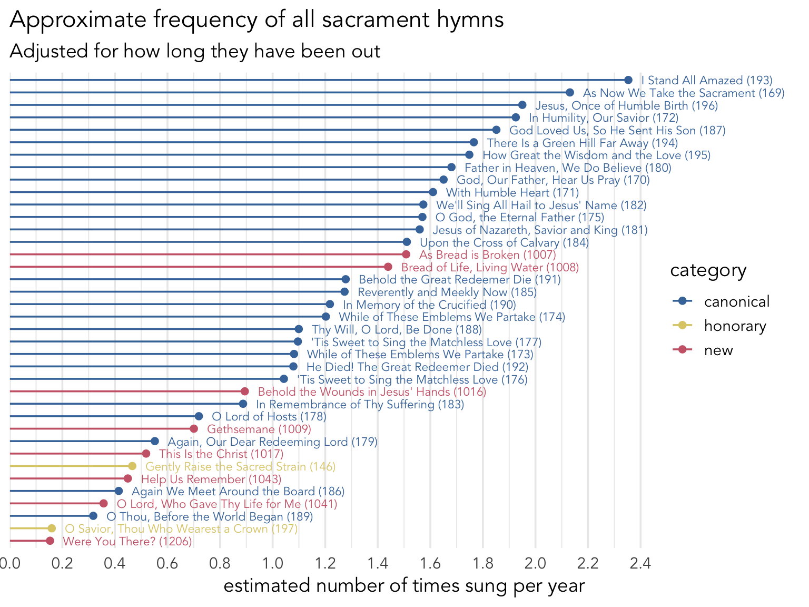
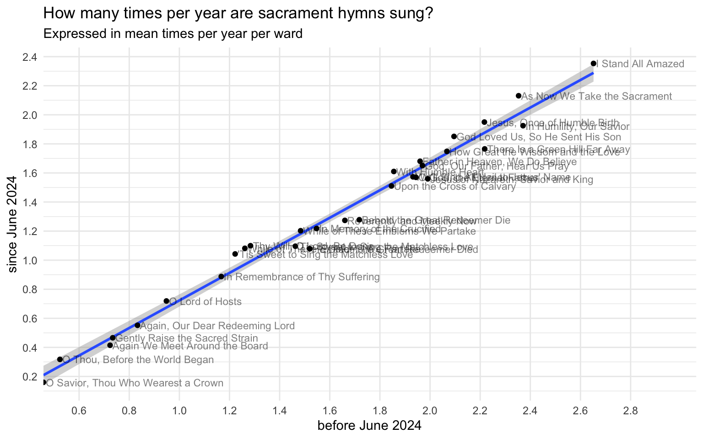
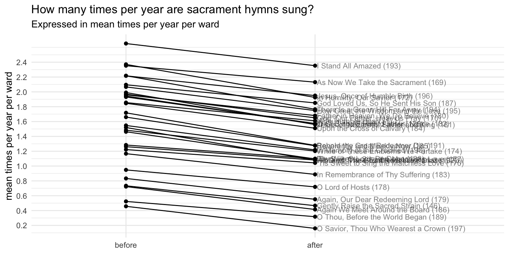

| hymn | Opening | Sacrament | Intermediate | Closing |
|---|---|---|---|---|
| As Bread is Broken (1007) | 0% | 99% | 1% | 0% |
| Help Us Remember (1043) | 2% | 96% | 2% | 0% |
| Bread of Life, Living Water (1008) | 1% | 95% | 2% | 1% |
| Behold the Wounds in Jesus' Hands (1016) | 5% | 85% | 6% | 4% |
| O Lord, Who Gave Thy Life for Me (1041) | 14% | 67% | 8% | 10% |
| Gethsemane (1009) | 16% | 43% | 19% | 22% |
| Were You There? (1206) | 33% | 32% | 18% | 16% |
| This Is the Christ (1017) | 29% | 25% | 17% | 30% |
| It Is Well with My Soul (1003) | 34% | 3% | 22% | 41% |
The new sacrament hymns
sacrament
frequency
I recently updated my very first blog post for this project, which focused on the sacrament hymns. Since I did that analysis in September 2023, we’ve been blessed with the addition of many new hymns. At the time of writing (March 2026), we’ve seen 72 new hymns be released. I thought about adding an analysis of the new hymns as a new section to that original post, but I decided to turn it into a dedicated post. So, here is an analysis of the new sacrament hymns we have seen so far and how their introduction has affected the 1985 sacrament hymns.
1 Which new hymns are considered sacrament hymns?
Of the new hymns, about 9 have been tagged as sacrament hymns.1 Here they are:
1 When looking through the hymns, I’m seeing which ones are tagged with “the Sacrament”. (I’m not sure why it’s the sacrament and not just sacrament like all other tags.) I’m getting conflicting results when I search on the website, the Library app, and the now-defunct music app, so I’ll just put all of them here.
- It Is Well with My Soul (#1003)
- As Bread is Broken (#1007)
- Bread of Life, Living Water (#1008)
- Gethsemane (#1009)
- Behold the Wounds in Jesus’ Hands (#1016)
- This Is the Christ (#1017)
- O Lord, Who Gave Thy Life for Me (#1041)
- Help Us Remember (#1043)
- Joyfully Bound (#1052)
- Were You There? (#1206)
Table 1 shows how often each of these hymns are sung as opening, sacrament, intermediate, and closing hymns. You’ll have to take some of these numbers with a grain of salt, particularly
To provide some context to these numbers, in my updated analysis of the sacrament hymns in the 1985 hymnal, I showed that almost sacrament hymns are sung in the sacrament slot of the meeting 97% of the time or more. The one exception is
For whatever reason though, only three of these hymns have been as consistently sung in the sacrament slot as the 1985 sacrament hymns:
The other hymns are used a fair amount in other times during the meeting. They include
2 From the 1985 hymnal,
I suspect that the reason why most of these are not as commonly sung during the sacrament slot is simply because of their location among the new hymns. It’s easy to remember which are sacrament hymns in the 1985 hymnal because they’re arranged all next to each other and in the middle of the printed book. These ones are scattered throughout the new hymns. I suspect that the sacrament hymns in the new printed hymnal will also be placed next to each other, and I predict that these will be more often sung during the sacrament slot and less often in other slots in the meeting. Come back in a few years and maybe I’ll do a follow-up analysis!
2 How popular have the new sacrament hymns been?
Let’s see how popular these new hymns have been compared to the other 1985 hymns. For this portion of the analysis, I’ll focus on the data since June 2024 when the new ones came out. Figure 1 shows this data. Note that this is the same as Figure 3 in my previous post on sacrament hymns, but with the new hymns overlaid. The hymns labeled “honorary” sacrament hymns are ones outside of the 169–196 range listed in the index, but are nevertheless sung often as sacrament hymns. See my previous post for more details.
For these new hymns, I’ve adjusted the calculation based on how long they’ve been out. Specifically, I’m looking at the number of times each hymn has been sung divided by the number of sacrament meetings I have data for since its release date. So, a hymn like

The thing to notice here is that the most frequent new sacrament hymns (
As for the rest of the new sacrament hymns, they seem to be somewhat less common. These five sacrament hymns are as common as the least common seven sacrament hymns from the 1985 hymnal. Some are less common than even the “honorary” sacrament hymns.
Again, it hasn’t been that long since these came out, so I suspect they’ll become more common over time. In fact, as stated already, if when the new hymnal comes out we see that the sacrament hymns are all placed next to each other, I suspect we’ll see a spike in the frequency of these hymns, both because it’ll be clearer that they are sacrament hymns and because they’ll be included in the regular rotation that many wards do as they cycle through the sacrament hymns.
3 How have the 1985 sacrament hymns been affected?
Figure 2 is exactly the same as Figure 3 from my analysis of the 1985 sacrament hymns. This is based on all my data from before June 2024 when the new hymns came out. It offers a snapshot of how frequent each of the sacrament hymns were before we broke the status quo with the release of new hymns.

When comparing Figure 2 (which is based on pre June 2024) data to Figure 1 (which is based on data since June 2024), a keen eye may notice some slight differences. I noticed that
Note
Fair warning, this section gets a bit technical in the statistical analysis.
To test this anecdotal claim that how common a hymn was before the new hymns came out compared to after, I ran a Pearson’s product-moment correlation test. The correlation is quite high and statistically significant, (\(r = 0.991, p < 0.001\)). Figure 3 shows that correlation.

That correlation is interesting as it is, but I wanted to see what the difference is between the two time periods. A careful look at the axes in Figure 3 shows that the numbers from before 2024 are slightly lower than the numbers from after June 2024. New hymns are added to the rotation but the number of slots hasn’t changed, so they’ll all be sung a little less often. Figure 4 shows the same data across time periods but arranged a little differently to show that difference.

As you can see all hymns decrease in overall frequency. A one-tailed, paired t-test to accompany this plot suggests that the difference between the two groups is statistically significant (\(t = 4.6\), \(df = 29\), \(p < 0.001\)).
A linear regression on these numbers (modeled as lm(times_per_year ~ before_vs_after)) suggests that the estimated number of times each sacrament hymn was sung per ward per year across all sacrament hymns before June 2024 is about 1.601 (about once every 30 weeks). This number makes sense since there were about 28–30 to choose from anyway. Since June 2024, the estimated value drops to 1.293 times per year, or about once every 37.1 weeks, which again makes sense since we have about eight new ones to choose from. According to the linear regression model, shift from before June 2024 to since June 2024 is statistically significant (\(p = 0.041\)).
These numbers match my intuition about what’s going on. A ward that has a habit of cycling through all the sacrament hymns, without repeating any before getting through all of them, might find it easiest to just add the new hymns to the rotation. A ward that does that would fit these numbers nearly perfectly. So, while relatively few wards may do that exact thing, it seems like that’s what many wards are doing collectively. Some wards are avoiding the new hymns while others are singing them a little more often. In the end, it balances out I think.
3.1 All hymns are equally affected!
What is striking to me is that there isn’t a systematic pattern to the lines in Figure 4. By that, I mean that there isn’t a cluster of hymns that have a much steeper or shallower slope than the others. Given the starting point on the left of the plot, you can reasonably guess where the end point of the line will be bsed on the average difference between all of the hymns.
This is in contrast to how the 1985 Christmas hymns were affected. In a recent analysis, I compared the 2025 Christmas season to 2023 and before. I found that the most popular Christmas hymns were sung about as often in 2025 as they were in 2023. Meanwhile the least popular ones were sung less often. The new Christmas hymns were introduced at the expense of the least popular hymns. If it were the case that sacrament hymns were affected in a simplar way, we’d see steeper lines at the bottom of the plot and more flat lines at the top. But we don’t see that here.
I can think of three reasons for this systematic effect.
- Many wards cycle through the sacrament hymns. They don’t repeat one until they’ve gotten through all of them. If a new hymn is added to that cycle, then all old hymns would be equally affected.
- I don’t think people have favorite sacrament hymns like they do Christmas hymns. People have favorite Christmas hymns. Perhaps the Christmas season doesn’t feel complete without singing it. Music coordinators may ensure that those are included each year. But for the less familiar ones, people don’t mind if they miss a year or two, so those are the ones that get skipped to make room for the new ones. But I don’t think people feel quite so strongly about the sacrament hymns, so if we go for another few weeks without singing
I Stand All Amazed (#193) , people won’t mind. - Finally, a big difference between the Christmas season and sacrament hymns is that there is only a certain number of weeks when Christmas hymns can be sung without raising eyebrows. So, in 2025 there were just as many slots as there was in 2023, but more Christmas hymns to choose from. Some have to take a hit because you just can’t get through all of them. That’s not the case with sacrament hymns. So peps this unbounded nature of the sacrament hymns is part of the reason why they’ve been affected more evenly.
4 Conclusion
This post analyzes the sacrament hymns introduced since June 2024 and how their inclusion in church has affected how often the sacramnet in the 1985 hymnal have been sung. I found that the most common sacrament hymns are
I think we’re in an interesting transition phase with sacrament hymns. Once the new hymnal comes out, I think we’ll see a focusing process happen. There will be a clearer line drawn between hymns appropriate for the sacrament slot of the meeting and other hymns. I suspect then that we’ll see some o the less common ones now jump to be more common. It’ll be fun to see how these numbers chnage over the next few years.